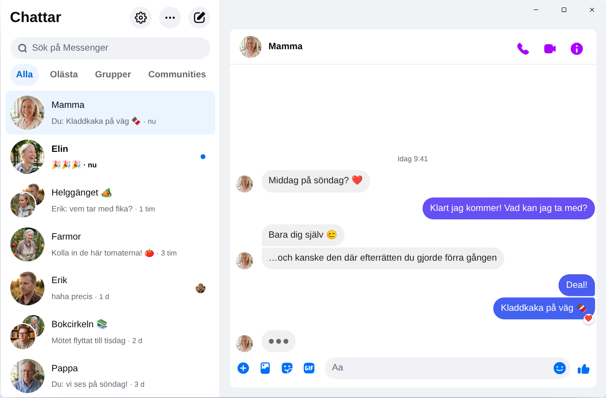

Chatpane / Windows
Uppdaterad i november 2026
Så får du Messenger på datorn 2026
Meta lade ner Messenger-appen för Windows den 15 december 2025, och messenger.com skickar dig numera vidare till Facebook. Här är det som fungerar i dag på en dator eller laptop med Windows 10 eller 11.
Gratis och öppen källkod · Windows 10 och 11 · Ingen app från Meta
Kort svar
Det finns inte längre någon officiell Messenger-app för datorn. Meta har tagit bort den från Microsoft Store, och sedan april 2026 fungerar Messenger på datorn bara på facebook.com/messages, mitt inne i Facebook.
Vill du ha Messenger i ett eget fönster, utan flöde och Reels? Chatpane är en gratis app med öppen källkod för Windows som visar dina chattar och inget annat. Det är ett fristående projekt och ingen app från Meta.
Därför fungerar inte de gamla guiderna
Många guider säger fortfarande att du ska leta upp Messenger i Microsoft Store, och nedladdningssajter erbjuder än i dag installationsfilen ”Messenger 2250.1”. Det är precis den app som Meta lade ner i december 2025: när du öppnar den skickar den dig bara vidare till Facebook. Du vinner ingenting på att installera den.
Skriv heller aldrig in ditt Facebook-lösenord i ett program eller på en sida som du inte vet var den kommer ifrån. Om någon erbjuder dig ”Messenger för PC” med en egen inloggning, var försiktig.
Vad hände med Messenger för Windows?
2024 bytte Meta ut Windows-appen mot en paketerad webbversion. I oktober 2025 meddelade Meta att appen skulle läggas ner och tog bort den från Microsoft Store, och den 15 december 2025 slutade den fungera. I april 2026 var det messenger.com:s tur. Datum och detaljer finns i vad som hände med Messenger för datorn.
Dina alternativ
Så kan du använda Messenger i Windows
Chatpane i Windows
Chatpane öppnar samma Messenger som du ser i webbläsaren. Dina chattar, grupper, samtal och bilder finns där och hålls synkade med mobilen. Det enda som försvinner är resten av Facebook.
- Bara Messenger. Facebooks flöde, Reels, Marketplace och sökning är dolda.
- Aviseringar som gör nytta. Svara, reagera, markera som läst eller stäng av ljudet direkt från aviseringen, utan att öppna fönstret. Smidigt när klasschatten, föreningen eller familjegruppen är igång hela dagen.
- Aktivitetsfältet och meddelandefältet. Antal olästa meddelanden på ikonen, start vid systemstart och, om du vill, att Chatpane fortsätter köras i meddelandefältet när du stänger fönstret.
- Integritet. Dölj att du skriver, dölj namn och profilbilder när du delar skärmen, och blockera Facebooks analysanrop (på som standard).
- Öppen källkod. Chatpane är öppen källkod under MIT-licensen. Koden finns på GitHub, så vem som helst kan se vad appen gör.
- På svenska. Chatpane följer datorns språk, så menyer och inställningar visas på svenska.

Så installerar du Chatpane
- Ladda ner installationsfilen för Windows. Har datorn en ARM-processor tar du ARM64-versionen.
- Öppna filen. Chatpanes installationsfiler för Windows är inte digitalt signerade än, så SmartScreen kan visa ”Windows har skyddat datorn”. Klicka på ”Mer info” och sedan på ”Kör ändå”. Ladda bara ner Chatpane från chatpane.app eller GitHub.
- Logga in med ditt vanliga Facebook-konto. Dina chattar dyker upp direkt.
Vill du inte installera något? Den portabla versionen (.zip) körs utan installation och kräver inga administratörsrättigheter.
Vanliga frågor
Frågor om Messenger på datorn
Är Chatpane gratis?
Ja. Inget pris, ingen prenumeration och inga annonser. Chatpane är öppen källkod under MIT-licensen, och koden ligger öppet på GitHub så att vem som helst kan granska den.
Är det här den officiella Messenger-appen?
Nej. Chatpane är ett fristående projekt utan koppling till Meta. Den visar det riktiga Messenger från facebook.com/messages i ett eget fönster, så dina meddelanden går fortfarande via Messenger och Metas villkor gäller.
Fungerar det utan Facebook-konto?
Nej. Sedan april 2026 låter Meta dig bara använda Messenger utan Facebook-konto i mobilappen. På datorn behöver både Chatpane och alla andra lösningar ett konto som kan logga in på facebook.com.
Fungerar Chatpane i Windows 10?
Ja, i Windows 10 och 11. Chatpane använder Microsoft Edge WebView2, som redan finns i Windows 11. I Windows 10 laddar installationsfilen ner det om det saknas.
Kan jag ringa röst- och videosamtal?
Ja. Det är hela Messenger, så röst- och videosamtal öppnas i ett eget fönster, precis som på facebook.com.
Skaffa Chatpane
Gratis och med öppen källkod. Laddas ner på några sekunder - den är bara runt 4 MB.
Finns även som: portabel .zip · ARM .exe · ARM .zip
Äldre Intel-Mac? Intel .dmg
Hela listan med kontrollsummor finns på
GitHub
- eller brew install --cask kristofferR/tap/chatpane